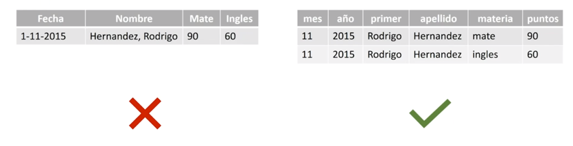

load("datosPobEspCenso2001.RData",verbose = TRUE)Loading objects:
datosEn primer lugar, se importarán los datos almacenados en un fichero “RData” (formato binario de R), que contiene datos de la población de las provincias de España obtenidas en el Censo de 2001.
load("datosPobEspCenso2001.RData",verbose = TRUE)Loading objects:
datosEl fichero “datosPobEspCenso2001.RData” contiene el objeto R del tipo tibble (una mejora del objeto data.frame) con los datos.
str(datos)Classes 'tbl_df', 'tbl' and 'data.frame': 52 obs. of 5 variables:
$ Provincia: chr "01-Álava" "02-Albacete" "03-Alicante/Alacant" "04-Almería" ...
$ CCAA : chr "País Vasco" "Castilla-La Mancha" "Comunidad Valenciana" "Andalucía" ...
$ TOTAL : num 286387 364835 1461925 536731 1062998 ...
$ Varon : num 142036 181461 722162 272023 508995 ...
$ Mujer : num 144351 183374 739763 264708 554003 ...Antes de seguir, se cargará el sistema “tidyverse”, que a su vez carga una serie de paquetes asociados a este sistema. En este manual nos centraremos principalmente en: “dplyr” y “ggplot2”.
library(tidyverse)
#library(tidyverse,warn.conflicts = FALSE)En R, al escribir el nombre del objeto que contiene los datos, nos mostrará sus valores. Aunque al ser, un objeto de tipo “tibble”, mostrará solamente una representación corta de ellos.
Veamos en este caso el contenido del objeto “datos” con información sobre la población de las provincias de España en el Censo de 2001. Nota: en este documento, los datos se mostrarán con ayuda en la cabecera yaml de: df-print: paged en html y df-print: kable en pdf.
datosLos 4 principios del sistema tidyverse son los siguientes:
Principio 1: se usarán datos convenientemente organizados.

En el de la izquierda se muestran 2 datos de un alumno en una sola fila (calificación en “Mate” y calificación en “Ingles”).
En el de la derecha se organiza de modo que hay dos filas, una para cada observación-calificación.
Principio 2: en cada paso se usa una función o herramienta.
Si se quisiera obtener: “la media actual de cada estudiante en la asignatura Matemáticas”, los pasos que se necesitan realizar sobre los datos son:
Principio 3: uso del operador tubería “%>%” (incluido en “tidyverse”) o “|>” (definido en R a partir de la versión 4.1) para combinar las herramientas o funciones a utilizar. Facilitará la lectura y la modificación del código.
Principio 4: cada paso es una consulta o un comando.
Con el sistema tidyverse, la respuesta a la cuestión planteada se obtendría del siguiente modo:
datos %>%
filter(materia == "mate") %>% # filtrado
group_by(apellido,primer) %>% # agrupación
summarise(media = mean(puntos)) # cálculo Equivalente (nuevas versiones de R):
datos |>
filter(materia == "mate") |>
group_by(apellido,primer) |>
summarise(media = mean(puntos))Nota: la información en “datos” no verifica los principios del sistema tidyverse (en una fila no hay un solo valor por provincia), pero como veremos con ejemplos a continuación, aunque no se cumpla lo recomendado, también es posible aplicar las herramientas del paquete tidyverse a datos que no cumplen sus principios.
La librería o paquete “dplyr” contiene una serie de herramientas que facilitarán la manipulación básica de los datos, además de usar el operador “tubería”: %>% (del paquete “magrittr”) o |> (incluido en nuevas versiones de R) que permiten encadenar varias herramientas de forma consecutiva, que como se verá más adelante, simplificará su lectura. Además, de acelerar la obtención de los resultados respecto al uso con el sistema base de R, sobre todo cuando los datasets son muy grandes. La mayoría de estas herramientas tiene sus equivalentes en el sistema base de R o en otros paquetes R, pero se están convirtiendo en un estándar.
Las principales herramientas que contiene dplyr son las siguientes:
select(): para seleccionar determinadas columnas o variables.filter(): para seleccionar determinadas filas o individuos-observaciones que verifican determinadas condiciones.arrange(): para ordenar los datos por determinadas columnas.mutate(): para construir nuevas columnas o variables.summarise(): para obtener columnas de resumen estadístico.group_by(): para agrupar las filas o individuos-observaciones por los valores de una o varias columnas o variables.Existen otras herramientas básicas como: slice() (selecciona filas por posición), rename(), pull() (convierte columna a un vector), sample_n() y sample_frac() (seleccionar filas de forma aleatoria), glimpse() (para presentar en consola), …
También existen herramientas que permiten realizar operaciones más avanzadas que ayudan a relacionar varios “data.frame”: inner_join(x, y), left_join(x, y), right_join(x, y), semi_join(x, y), anti_join(x, y), …, y crear un solo “data.frame”.
Aprenderemos el uso básico de “dplyr” con ayuda de ejemplos.
R muestra de forma no muy amigable los datos (como se ha visto anteriormente), por ello se va a usar la función kable() del paquete “knitr” para mejorar su presentación.
library(knitr)Warning: package 'knitr' was built under R version 4.3.3kable(head(datos))| Provincia | CCAA | TOTAL | Varon | Mujer |
|---|---|---|---|---|
| 01-Álava | País Vasco | 286387 | 142036 | 144351 |
| 02-Albacete | Castilla-La Mancha | 364835 | 181461 | 183374 |
| 03-Alicante/Alacant | Comunidad Valenciana | 1461925 | 722162 | 739763 |
| 04-Almería | Andalucía | 536731 | 272023 | 264708 |
| 33-Asturias | Asturias (Principado de) | 1062998 | 508995 | 554003 |
| 05-Ávila | Castilla y León | 163442 | 81850 | 81592 |
Nota: con la función head(datos) se mostrarían únicamente las primeras 6 filas de los datos. Pero también se podrían mostrar en número diferente, por ejemplo, para mostrar las 10 primeras filas, se escribiría: head(datos,10).
La función arrange() del paquete “dplyr” nos va a permitir ordenar los datos por una o más columnas. Veamos varios ejemplos.
En el siguiente ejemplo, ordenamos los datos en orden ascendente del valor en la columna o variable “TOTAL” (población total de la provincia) y mostramos únicamente las 10 primeras filas:
head(arrange(datos, TOTAL),10)Puede verse que la menos poblada es Melilla con 66.411 habitantes, seguida de Ceuta, Soria, Teruel y Segovia.
Ese mismo objetivo se puede conseguir con ayuda del operador tubería (o pipe) %>% para encadenar las mismas operaciones de forma consecutiva, como se puede ver en el siguiente código:
# Se podría escribir así: datos %>% arrange(TOTAL) %>% head(10)
datos %>%
arrange(TOTAL) %>%
head(10)Se puede leer del siguiente modo: “a datos se aplica una ordenación según la columna TOTAL y a continuación al resultado se aplica que se muestren únicamente las 10 primeras filas”.
En RStudio, para insertar “%>%” en el editor o en la consola, se puede utilizar la combinación de teclas: Ctrl+May+M (en Mac: Cmd+May+M).
Lo que hace realmente el operador tubería es colocar el elemento resultante de lo que está a su izquierda como primer argumento de la función que tiene a su derecha.
x %>% f(y) es lo mismo que f(x,y)
x |> f(y) es lo mismo que f(x,y)
y %>% f(x, ., z) es lo mismo que f(x,y,z)
Importante. El operador “%>%” se puede utilizar también con cualquier función del sistema base de R u otra librería.
El ejemplo, anterior sería equivalente al siguiente, en el que se tiene que ir dando nombres diferentes de objetos (más difícil de leer):
elemento01 = arrange(datos,TOTAL)
elemento02 = head(elemento01,10)
elemento02Ejemplo. Se quieren presentar los datos ordenados por CCAA (comunidad autónoma) y en caso de empate ordene de forma descendente según TOTAL (se usa: desc()).
datos %>%
arrange(CCAA,desc(TOTAL)) %>%
head(15) %>%
kable(booktabs = TRUE)| Provincia | CCAA | TOTAL | Varon | Mujer |
|---|---|---|---|---|
| 41-Sevilla | Andalucía | 1727603 | 846220 | 881383 |
| 29-Málaga | Andalucía | 1287017 | 630902 | 656115 |
| 11-Cádiz | Andalucía | 1116491 | 552463 | 564028 |
| 18-Granada | Andalucía | 821660 | 401638 | 420022 |
| 14-Córdoba | Andalucía | 761657 | 372464 | 389193 |
| 23-Jaén | Andalucía | 643820 | 317343 | 326477 |
| 04-Almería | Andalucía | 536731 | 272023 | 264708 |
| 21-Huelva | Andalucía | 462579 | 229013 | 233566 |
| 50-Zaragoza | Aragón | 861855 | 422033 | 439822 |
| 22-Huesca | Aragón | 206502 | 104089 | 102413 |
| 44-Teruel | Aragón | 135858 | 68724 | 67134 |
| 33-Asturias | Asturias (Principado de) | 1062998 | 508995 | 554003 |
| 07-Balears (Illes) | Balears (Illes) | 841669 | 417314 | 424355 |
| 35-Palmas (Las) | Canarias | 887676 | 444761 | 442915 |
| 38-Santa Cruz de Tenerife | Canarias | 806801 | 398205 | 408596 |
La función arrange() puede ordenar por más de 2 columnas, y el uso de la función desc() sobre “TOTAL” (podría usarse en las columnas que se necesite) ha establecido que la ordenación sea de forma descendente según la columna indicada.
Ahora se usará select() para reducir el dataset al quedarse con determinadas columnas.
Ejemplo. Se quiere trabajar únicamente con los datos: nombres de provincia y población total. Para ello, se guarda el resultado obtenido con select() en un objeto R que se ha llamado datos_s01.
datos_s01 = datos %>%
select(Provincia,TOTAL)
# se pueden usar posiciones de columna: select(1,3)
# también expresiones como: select(1,3:4)
head(datos_s01)Nota: Con select también se podrían reordenar la colocación de las columnas, apareciendo en el nuevo objeto con las columnas colocadas en el orden en el que se han enumerado en la llamada a la función.
Ejemplo. Se quieren obtener las columnas CCAA, Provincia y Población de Mujeres, ordenadas por Población de Mujeres de forma descendente (de mayor a menor).
datos %>%
select(CCAA,Provincia,Mujer) %>%
arrange(desc(Mujer)) %>%
head()Una operación muy habitual es reducir el conjunto de datos, al quedarse con aquellas filas u observaciones-individuos que cumplen determinadas condiciones lógicas, o dicho de otro modo, poseen ciertas características que nos interesan.
Ejemplo. Se quiere obtener un conjunto de datos que contengan únicamente la información de las provincias de Andalucía que tengan una población total superior a 800.000 habitantes.
datos_f01 = datos %>%
filter(CCAA == "Andalucía", TOTAL>800000)
# '==' para la igualdad en expresiones lógicas
datos_f01# Equivalente a:
# datos_f02 = datos %>%
# filter(CCAA == "Andalucía" & TOTAL>800000) Como puede verse en el ejemplo anterior se puede añadir más de una condición en la función filter() separándolas por comas. La expresión lógica podría ser tan compleja como se necesite, recordando que se pueden usar paréntesis para facilitar su correcta construcción. Los operadores lógicos más usados son: == (igual), < (menor), > (mayor), <= (menor o igual), >= (mayor o igual), != (distinto), & (y lógico), | (o lógico).
En filter() se usa muy a menudo la función is.na() para seleccionar las filas que tienen el valor NA en una columna, o también !is.na() para seleccionar las filas que no tienen el valor NA en una columna.
En nuestros datos, no aparecen valores NA, pero se podría haber utilizado una llamada del siguiente tipo:
datos %>%
filter(!is.na(TOTAL))Ejemplo. Se quiere trabajar únicamente con aquellas provincias que tienen más hombres que mujeres, mostrando las variables: Provincia, población de hombres y población de mujeres y ordenando por número de hombres de forma descendente.
datos %>%
filter(Varon >= Mujer) %>%
select(Provincia,Varon,Mujer) %>%
arrange(desc(Varon)) %>%
kable(booktabs=TRUE)| Provincia | Varon | Mujer |
|---|---|---|
| 35-Palmas (Las) | 444761 | 442915 |
| 04-Almería | 272023 | 264708 |
| 09-Burgos | 174576 | 174358 |
| 22-Huesca | 104089 | 102413 |
| 19-Guadalajara | 88535 | 86464 |
| 05-Ávila | 81850 | 81592 |
| 40-Segovia | 73973 | 73721 |
| 44-Teruel | 68724 | 67134 |
| 42-Soria | 45443 | 45274 |
| 51-Ceuta | 35949 | 35556 |
Nota. Cualquiera de las herramientas del paquete “dplyr” se podrían emplear varias veces y en distintas posiciones, siempre que sea sintácticamente correcta la expresión.
La función mutate() permite añadir nuevas columnas a nuestros datos al efectuar algún tipo de operación más o menos compleja, generalmente a partir de los datos de las otras columnas.
Ejemplo. Se quieren añadir dos columnas:
datos_m01 = datos %>%
mutate(Diferencia = Varon - Mujer,
PorcMuj = round( 100 * (Mujer/TOTAL),2)
)
datos_m01 %>%
head(10) %>%
kable(booktabs=TRUE)| Provincia | CCAA | TOTAL | Varon | Mujer | Diferencia | PorcMuj |
|---|---|---|---|---|---|---|
| 01-Álava | País Vasco | 286387 | 142036 | 144351 | -2315 | 50.40 |
| 02-Albacete | Castilla-La Mancha | 364835 | 181461 | 183374 | -1913 | 50.26 |
| 03-Alicante/Alacant | Comunidad Valenciana | 1461925 | 722162 | 739763 | -17601 | 50.60 |
| 04-Almería | Andalucía | 536731 | 272023 | 264708 | 7315 | 49.32 |
| 33-Asturias | Asturias (Principado de) | 1062998 | 508995 | 554003 | -45008 | 52.12 |
| 05-Ávila | Castilla y León | 163442 | 81850 | 81592 | 258 | 49.92 |
| 06-Badajoz | Extremadura | 654882 | 323541 | 331341 | -7800 | 50.60 |
| 07-Balears (Illes) | Balears (Illes) | 841669 | 417314 | 424355 | -7041 | 50.42 |
| 08-Barcelona | Cataluña | 4805927 | 2341592 | 2464335 | -122743 | 51.28 |
| 09-Burgos | Castilla y León | 348934 | 174576 | 174358 | 218 | 49.97 |
Como puede observarse, se han mantenido las columnas existentes y se han añadido las nuevas al conjunto de datos. Nota: la función transmute() del paquete dplyr añade columnas pero sin mantener las columnas existentes.
Ejemplo. Ahora construimos los datos con una nueva columna. Trabajamos únicamente con aquellas provincias que tienen mayor número de hombres que de mujeres, y presentamos la nueva variable diferencia (hombres menos mujeres), ordenando por la diferencia (mayor a menor) pero sin mostrar el total.
datos %>%
filter(Mujer <= Varon) %>%
mutate(Diferencia = Varon - Mujer) %>%
arrange(desc(Diferencia)) %>%
select(-TOTAL) %>%
kable(booktabs=TRUE)| Provincia | CCAA | Varon | Mujer | Diferencia |
|---|---|---|---|---|
| 04-Almería | Andalucía | 272023 | 264708 | 7315 |
| 19-Guadalajara | Castilla-La Mancha | 88535 | 86464 | 2071 |
| 35-Palmas (Las) | Canarias | 444761 | 442915 | 1846 |
| 22-Huesca | Aragón | 104089 | 102413 | 1676 |
| 44-Teruel | Aragón | 68724 | 67134 | 1590 |
| 51-Ceuta | Ceuta | 35949 | 35556 | 393 |
| 05-Ávila | Castilla y León | 81850 | 81592 | 258 |
| 40-Segovia | Castilla y León | 73973 | 73721 | 252 |
| 09-Burgos | Castilla y León | 174576 | 174358 | 218 |
| 42-Soria | Castilla y León | 45443 | 45274 | 169 |
Nota. El uso del “-” delante de la variable “TOTAL” significa que se muestren todas las columnas menos la columna “TOTAL”.
Con la función summarise() se obtienen objetos que contienen en sus columnas cualquier tipo de cálculo o de resumen estadístico obtenido sobre alguna columna teniendo en cuenta todas sus filas.
Ejemplo. En el siguiente ejemplo obtenemos de los datos de población de las provincias españolas en el censo del 2001, la suma total de hombres, la suma total de mujeres, la población total (obtenida de 2 formas), la media de población de los hombres por provincia y la cuasidesviación típica de la población de hombres.
datos_su01 = datos %>%
summarise(TotHombres = sum(Varon),
TotMujeres = sum(Mujer),
TotalHM = sum(Varon+Mujer),
TotalHM2 = TotHombres + TotMujeres,
MediaHombres = mean(Varon),
SdHombres = sd(Varon))
datos_su01Es un objeto con una sola fila, en la que por ejemplo, TotHombres se ha obtenido sumando todos los elementos de la columna “Varon”, es decir, se ha calculado el total de hombres en España en el censo del 2001.
Se puede observar, que hay más mujeres que hombres, a pesar de que al nacer existe una proporción mayor de niños que de niñas.
“dplyr” dispone de funciones muy útiles para emplear con summarise(): n() (para contar filas), n_distinct(COLUMNA) (para contar filas de valores distintos), etc.
La función group_by() nos ayudará a obtener cálculos o resúmenes estadísticos pero para cada uno de los grupos de filas o individuos que se hayan establecido.
Ejemplo. Se quiere obtener la población total para cada CCAA.
datos_g01 = datos %>%
group_by(CCAA) %>%
summarise(TotalCCAA = sum(TOTAL),
TotHombresCCAA = sum(Varon),
TotMujeresCCAA = sum(Mujer,na.rm = TRUE))
datos_g01 %>%
kable(booktabs=TRUE)| CCAA | TotalCCAA | TotHombresCCAA | TotMujeresCCAA |
|---|---|---|---|
| Andalucía | 7357558 | 3622066 | 3735492 |
| Aragón | 1204215 | 594846 | 609369 |
| Asturias (Principado de) | 1062998 | 508995 | 554003 |
| Balears (Illes) | 841669 | 417314 | 424355 |
| Canarias | 1694477 | 842966 | 851511 |
| Cantabria | 535131 | 260586 | 274545 |
| Castilla y León | 2456474 | 1209874 | 1246600 |
| Castilla-La Mancha | 1760516 | 875550 | 884966 |
| Cataluña | 6343110 | 3106531 | 3236579 |
| Ceuta | 71505 | 35949 | 35556 |
| Comunidad Valenciana | 4162776 | 2046984 | 2115792 |
| Extremadura | 1058503 | 524361 | 534142 |
| Galicia | 2695880 | 1294378 | 1401502 |
| Madrid (Comunidad de) | 5423384 | 2609746 | 2813638 |
| Melilla | 66411 | 33134 | 33277 |
| Murcia (Región de) | 1197646 | 597265 | 600381 |
| Navarra (Comunidad Foral de) | 555829 | 276629 | 279200 |
| País Vasco | 2082587 | 1017881 | 1064706 |
| Rioja (La) | 276702 | 137827 | 138875 |
La función group_by ha preparado los datos para que aparezcan las provincias de cada CCAA agrupadas, de forma que al llamar a la función summarise() no devuelve una única fila como en los ejemplos del apartado anterior, sino que obtiene una fila de resultados para cada grupo formado, en este caso para cada CCAA. Por ejemplo, el valor de “TotalCCAA” para Andalucía se ha obtenido al sumar las poblaciones (TOTAL) de las 8 provincias de Andalucía.
Esto mismo se podría haber hecho con ayuda del sistema base de R, con la función aggregate() (devuelve un data.frame) o tapply() (devuelve un vector), como se muestra a continuación:
aggregate(TOTAL ~ CCAA, datos, sum)with(datos, tapply(TOTAL,CCAA,sum,na.rm=TRUE))Ejemplo. Se quiere obtener el total de la población por CCAA, pero nos interesa presentar únicamente las que tienen más de 5 millones de habitantes y ordenadas de mayor a menor por población total.
datos_ag02 = datos %>%
group_by(CCAA) %>%
summarise(TOTALCCAA = sum(TOTAL),
TOTALVaron = sum(Varon),
TOTALMujer = sum(Mujer)) %>%
filter(TOTALCCAA >= 5000000) %>%
arrange(desc(TOTALCCAA))
datos_ag02 %>%
kable()| CCAA | TOTALCCAA | TOTALVaron | TOTALMujer |
|---|---|---|---|
| Andalucía | 7357558 | 3622066 | 3735492 |
| Cataluña | 6343110 | 3106531 | 3236579 |
| Madrid (Comunidad de) | 5423384 | 2609746 | 2813638 |
Se pueden utilizar: count() o tally() también para contar el número de observaciones por grupo.
slice(), slice_head(), slice_tail(), slice_min(), slice_max(), slice_sample(): Permiten seleccionar filas por sus posiciones (valores enteros). Salvo la primera función, slice(), todas tienen como argumentos n (número filas) o prop (fracción de filas). Se pueden usar de forma conjunta con datos agrupados: group_by(). Sustituyen a funciones como: top_n() o top_frac().
Las siguientes instrucciones son correctas:
datos %>%
slice(1:10)
datos %>%
group_by(CCAA) %>%
slice_head(prop = 0.5)
datos %>%
group_by(CCAA) %>%
slice_tail(prop = 0.5)
datos %>%
group_by(CCAA) %>%
slice_min(prop = 0.5,order_by = TOTAL)
datos %>%
group_by(CCAA) %>%
slice_max(prop = 0.5,order_by = TOTAL)
set.seed(12345)
datos %>%
slice_sample(prop = 0.3,replace = FALSE)
datos %>%
group_by(CCAA) %>%
slice_sample(n = 5, replace = FALSE)
datos %>%
group_by(CCAA) %>%
slice_sample(n = 5, replace = TRUE)Nota: Se pueden usar también: first(), last() y nth(), para extraer el primer, último o n-ésimo valor de un grupo (o vector).
Ejemplo. Para contar el número de provincias por cada CCAA
datos %>%
group_by(CCAA) %>%
dplyr::summarise(NumProvincias = n()) # Equivale a: # datos %>%
# group_by(CCAA) %>%
# count() # o tally()Para explicar la miniherramienta o función case_when(), se utilizan los siguientes datos que contienen personas que pertenecen o no a dos grupos: “Grupo1” y “Grupo2”.
df = data.frame(
Nombre = c("Juan","Ana","Marta"),
Grupo1 = c(F,T,T),
Grupo2 = c(F,F,T)
)
dfSe utiliza la función case_when() para construir una nueva columna (mutate()) que asigne valores nuevos en función de los valores de las columnas: “Grupo1” y “Grupo2”. Como puede verse, aparecen una serie de expresiones lógicas a la izquierda del símbolo “~”, que si es cierta se asigna el valor que está a su derecha.
df <- df %>%
mutate(Grupo = case_when(
Grupo1 & Grupo2 ~ "A", # Ambos grupos: Grupo A
xor(Grupo1, Grupo2) ~ "B", # A un grupo solamente: Grupo B
!Grupo1 & !Grupo2 ~ "C", # Ningún grupo: Grupo C
TRUE ~ "D" # En otro caso: Grupo D (no habría otro caso)
))
dfNota: En demografía, cuando se quiere agrupar la variable edad en distintas categorías se puede utilizar case_when().
A continuación se recogen algunos enlaces con material relacionado con “dplyr” para poder profundizar:
dplyr en CRAN: https://cran.r-project.org/web/packages/dplyr/index.html
Documentación de dplyr: https://dplyr.tidyverse.org
Transparencias sobre el uso de dplyr (inglés): http://patilv.com/dplyr-nycflights/